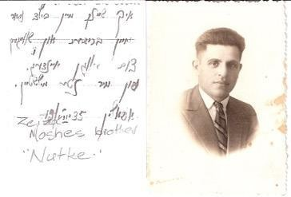

The Opalin story / Remembrance
Those who remained
in Opalin.
Historical evidence documents mass murder. Individual family fates require their own evidence, and unresolved details should remain visible.
The killing-site record
Yahad–In Unum dates the mass shooting at the Jewish cemetery to 2 October 1942. Its profile reports 582 Jewish victims, a German unit from Lyuboml and assistance by Ukrainian police. This documents the destruction of the Jewish community; the inspected source does not itself prove that the whole town was razed.Vyshnivka, formerly Opalin — killing-site profile
What the witness clip adds
The six-minute clip, reference 1443U, was reviewed through its embedded English subtitles. The witness describes requisitioned grave diggers, including his father, and police escorting the victims. No relative is named in the subtitles. The claim about a single shooter is attributed to a friend and is not presented as the witness’s own observation.Opalin witness video 1443U00:40; 02:56–03:32; 04:36
| Question | Profile | Video 1443U |
|---|---|---|
| Victim total | 582 | Witness estimates 860 |
| Witness / age | Serhiy S., born 1929; references 1441/1442 | Title says born 1934; speaker says he was ten |
The quoted profile witness and the clip cannot safely be assumed to be the same person. The age and numerical differences have not been reconciled. Watch on the source page; the full video is linked rather than republished.Vyshnivka, formerly Opalin — killing-site profileOpalin witness video 1443U
Nutke’s individual fate remains unresolved


The family remembers Nutke as having been killed in the Holocaust. Neither a secure victim testimony nor a personal death date, spouse or formal name has yet been found. The town’s massacre date is not automatically his death date. A search expansion from Nutke to Nuta/Natan is a tool, not an identification.Riva Gilinsky — Ethan Cohen’s family historyMinnie Spitalnik - 1Nutke: portrait and handwritten reverse
One incomplete Natan/Nute record names father Yosef and wife Feigele, which conflicts with this family’s remembered father Leibish. It was not attached. Minnie also names an Appelbaum uncle Nutke: he is a different relative.Minnie Spitalnik - 2Mark Cohen’s family recollections
The other testimonies
The Opalin-linked testimonies for Freida, Chuma, Yosefa and Pesl preserve names and relationships that may join the family tree. Their exact family identifications remain qualified. Chaya Dwora’s testimony gives death in 1941, so that date must not be reassigned to Opalin’s 1942 massacre. Mendel’s conflicting testimony locations likewise remain unreconciled.Freida Lederer testimonyChuma / Khuma, born LedererJospa / Yosefa Lederer testimonyPesl Sosne / Sosna, born LedererChaya Dwora Alter, born MilshteinMendel Lederer: baker testimonyMendel Lederer: second testimony